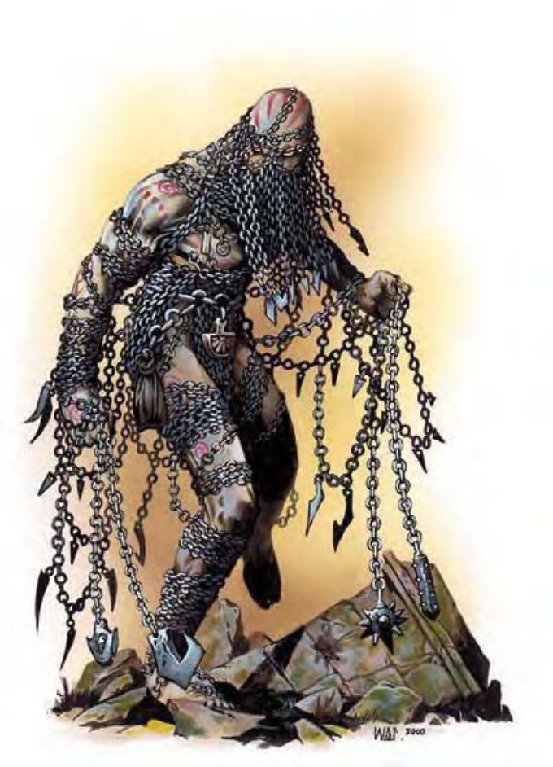

| 资料栏位 | 炼魔 (Chain Devil) 中型异界生物 (邪恶、外界、守序) |
|---|---|
| 生命骰 | 8d8+16 (52HP) |
| 先攻 | +6 |
| 速度 | 30英尺 (6格) |
| 防御等级 | 20 (+2敏捷、+8天生)、接触12、措手不及18 |
| 基本攻击/擒抱 | +8 / +10 |
| 攻击 | 锁链+10近战 (2d4+2 / 19-20) |
| 全力攻击 | 2锁链+10近战 (2d4+2 / 19-20) |
| 占据/触及 | 5英尺 / 5英尺 (使用锁链时10英尺) |
| 特殊攻击 | 舞空锁链、沮丧凝视 |
| 特殊能力 | 伤害减免5/银或善良、黑暗视觉60英尺、对寒冷免疫、再生2、法术抗力18 |
| 豁免 | 强韧+8、反射+8、意志+6 |
| 属性 | 力量15、敏捷15、体质15、智力6、感知10、魅力12 |
| 技能 | 攀爬+13、手艺 (铁匠)+17、脱逃+13、威吓+12、聆听+13、侦察+13、绳技+2 (捆绑+4) |
| 专长 | 警觉、精通致命攻击 (锁链)、精通先攻 |
| 环境 | 巴托九狱 |
| 组织 | 单独、成队 (2-4)、一团 (6-10) 或聚众 (11-20) |
| 挑战级数 | 6 |
| 宝藏 | 标准 |
| 阵营 | 总是守序邪恶 |
| 进化 | 9-16HD (中型) |
| 等级修正值 | +6 |
锁链碰撞的叮当声是该生物来临的前兆。外型与体型近似人类，但锁链环绕其全身，每条末端均连接着勾子、刀刃或重型铁球。锁链在该生物身上不住滑动，仿佛具有生命一般。
被锁链环绕的生物，亦称坎协魔。由于形似一般受镣铐束缚的幽魂，因此常被误认为不死生物。坎协魔外型近似人类，只是被锁链环绕，并非穿着衣服。炼魔6英尺高，含锁链约300磅重。炼魔通晓炼狱语、通用语。
战斗炼魔挥舞刺链攻击，把刺链当作衣服、防具与武器。炼魔喜欢品尝恐惧，可能因此跟踪受害者数小时，于攻击前先让对方害怕惊慌。在计算伤害减免时，炼魔的天生武器与持有武器都视为邪恶阵营与守序阵营。
舞空锁链（超自然）：炼魔最可怕的攻击。他们可在20英尺范围内，以标准动作控制最多四条锁链按照自己的意思舞动。除此之外，炼魔可以把锁链长度增加最多15英尺，并于末端安装剃刀般锐利的倒勾。锁链的攻击效率与炼魔本人相同。若锁链被其他生物夺去，其他生物可进行意志检定（DC=15），以解开炼魔对锁链的控制力量。若检定成功，炼魔24小时内无法再度尝试控制该锁链；该锁链未离开其他生物前，炼魔亦不可尝试控制。豁免DC的调整值与魅力调整值相同。攀爬自己控制的锁链时，炼魔可以正常速度移动，且不须进行“攀爬”检定。
沮丧凝视（超自然）：距离30英尺，通过意志检定则无效（DC=15）。炼魔可把脸部变成对手过往挚爱或死敌的模样。若对手检定失败，则1d3轮内的攻击检定具有-2减值。豁免DC的调整值与魅力调整值相同。
再生（特异）：银制武器、善良阵营的武器与性质描述为善良的法术或效应可以对炼魔造成正常伤害。若失去部分身体，2d6x10分钟后就会重新长出来。如果将断掉的肢体装在残肢的位置，立刻就可以接续。
技能：炼魔进行金属制品相关的“手艺”检定时具有+8种族加值。